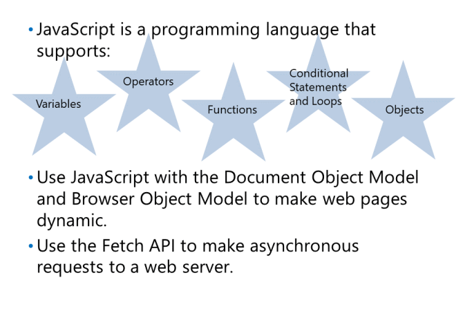
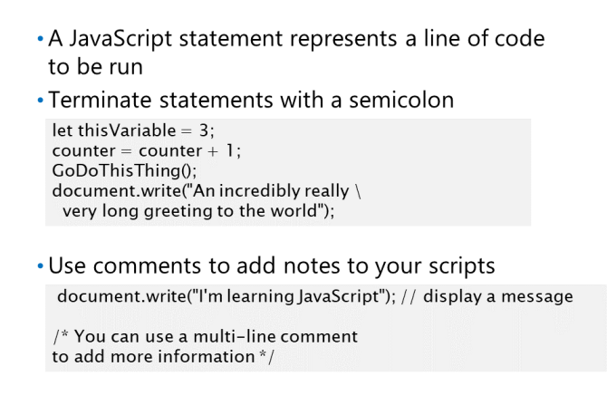

JavaScript to silnik skryptowy posiada
te same podstawowe funkcje, co inne
języki programowania.
Zmienne do przechowywania informacji.
Operatory do wykonywania obliczeń i porównań.
Funkcje grupowania instrukcji w części wielokrotnego użytku.
Instrukcje warunkowe i konstrukcje pętli do sterowania przebiegiem programu.
Możliwość tworzenia obiektów o właściwościach, metodach i zdarzeniach.
let thisVariable = 3; tworzy zmienną thisVariable
counter = counter + 1; inkrementacja
GoDoThisThing(); wywolanie funkcji
Wszystkie instrukcje w JavaScript powinny być napisane w jednym wierszu i zakończone średnikiem. The
wyjątkiem od tej reguły jest to, że można podzielić duży ciąg na kilka wierszy (dla czytelności) za pomocą
ukośnik wsteczny.

Komentarze: /* i kończą się */ oraz komentarze jednowierszowe, które zaczynają się od // i kończą na końcu linii.
kod powinno się umieszczać pod koniec body :